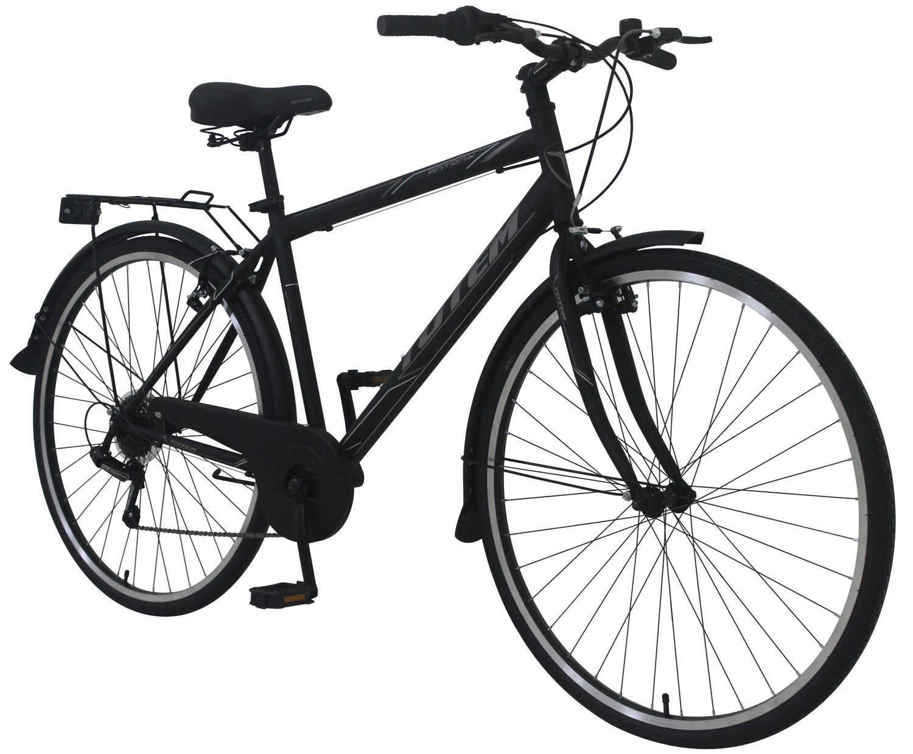

VELO MARKET
Citybike ANTHONY 28" Erkek Sehir Bisikleti
Ürünümüz 20. Eylül 2020 tarihine ve stoklar bitene kadar 350 CHF yerine sadece 170 CHF'ye satilmaktadir.
| Özellikleri: | ||
|---|---|---|
| Bisiklet Tipi: | Sehir Bisikleti | |
| Çerçeve Malzemesi: | Aliminyum | |
| Değiştirici: | Shimano Turnuva | |
| Attırıcı: | Shimano Turnuva | |
| Vites Sayisi: | 18 | |
| Zincir | KMC Z7 | |
| Frenler: | Tektro V-Fren | |
| Fiyati: | ||
| Garanti: | 2 Yil | |